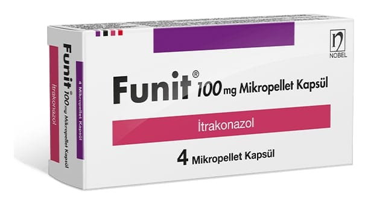

Funit 100 mg Kapsül, 4 Adet

Ne için kullanılır
KT · Bölüm 1 FUNİT, vajina (kadınlarda iç üreme organlarıyla dış üreme organlarını birbirine bağlayan hazne), cilt, ağız, gözler, tırnaklar ya da iç organların mantar hastalıklarını (enfeksiyon) tedavi etmede kullanılan bir ilaçtır.
Her birinde 100 mg itrakonazol içeren pembe opak / kahverengi renkli sert jelatin kapsüller halinde 4, 15 ve 30’luk blisterlerde sunulmaktadır.